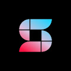 ShowMe PONA 什么是 ShowMe PONA？ ShowMe PONA 是一个 NFT（不可替代令牌）集合。 存储在区块链上的数字艺术品集合。 ▶ 存在多少 ShowMe PONA 代币？ 总共有 15,528 个 ShowMe PONA NFT。 目前，6,
Showtime Genesis Drop 欢迎来到 OpenSea 上的 Showtime Genesis Drop 主页。 发现这个系列中最好的项目。 为了庆祝我们的免费 NFT 铸币发布，我们向所有早期支持者赠送了首个 Showtime 收藏品！ 感谢您参与我们构建
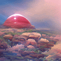 Shroom Goons 300 件人工 AI 生成的艺术作品，旨在让您旅行。 Shroom goons 兼具验证您绊倒 BALLS 的作用，并且是所有未来收藏的门票。 Shroom Goons NFT - 常见问题（FAQ） ▶ 什么是 Shroom Goons
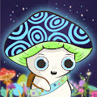 Shroom Scouts Shroom Scouts 是为追求这次冒险的 Magic Mushroom Clubhouse NFT 持有者收集的徽章。 这些徽章的拥有者拥有吹牛的权利、获得未来徽章的能力，以及在 Magic Mushroom Clubhouse 社区内的某些好处。 Shroom Scouts 的成立
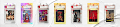 Shroomies by Ines Helene Shroomies 是 100 个限量版 NFT 的集合，全部由 Ines Helene (Aka-ShroomGirl) 主演。 每个持卡人都将被欢迎加入私人俱乐部，会员可以在其中与 Ines 聊天、交换卡牌、帮助创建第 2 季并查看独家内容
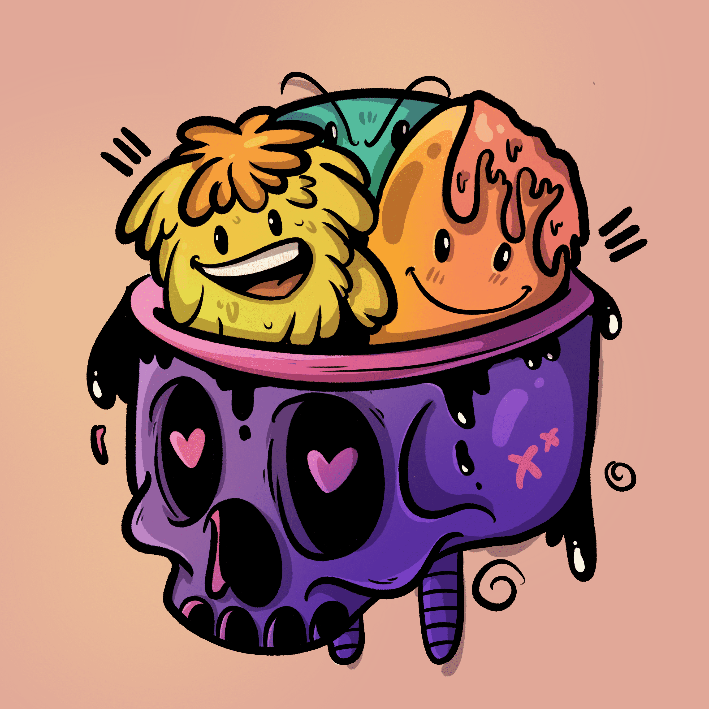 Side Kicks By Loomi Heads 1930 年是动画片最好的时代之一。 我们的 Loomis 的灵感来自 30 年代的艺术风格，即“橡胶软管风格”，具有典型的 1930 年代松软和时髦的外观。 我们希望通过一点艺术气
SIGH BOOSTERS SIGH Boosters 是标准的 ERC721 NFT，作为原生折扣券，将被 SIGH Finance（以太坊网络上即将推出的计量经济学研究计划）接受。目前有 3 种类型的 SIGH Booster NFT：SI
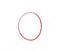 signals - a direct experience “信号”是一系列音频/视觉冥想。它完全是关于振动和关系。 谐波、泛音和听觉振动的相互作用直接转化为视觉表现，使体验者能够注意到声音中更微妙的细
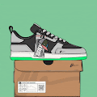 Signature Sneakers Generative Signature Sneakers 是由 Dan Freebairn（又名@KickPosters）创作的 777 幅运动鞋插图中的 1 幅的集合。Dan 是一名设计师和插画家，他在鞋类行业工作
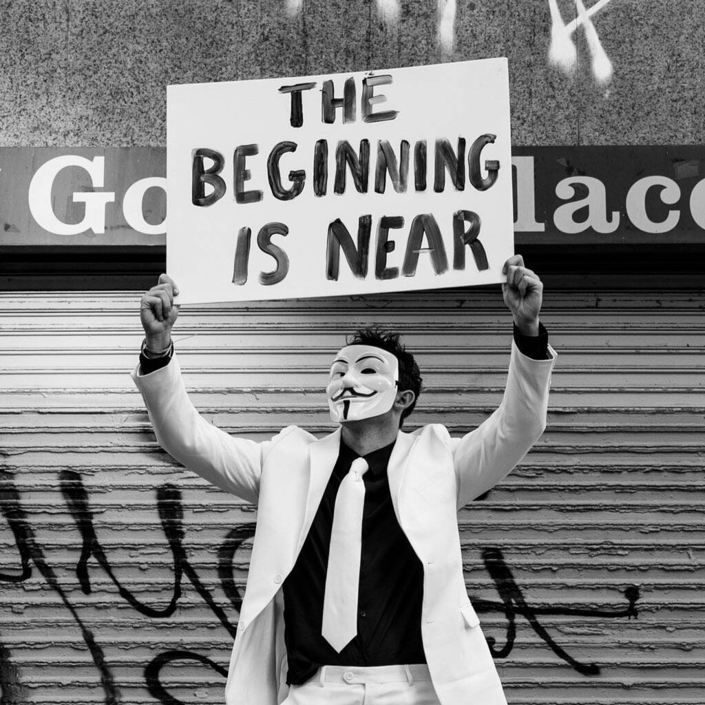 Signs of the Times by Brendan North Signs of the Times”是摄影师 Brendan North 的一个项目，它评论了 NFT 市场的现状和整个世界事务的状态。 该项目将作为对我们未来和真正的 NFT 时尚的最终社区信任投票，
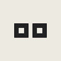 siimplex Siimplex 是 9,999 个独特设计和生成的 3D vox 风格的角色，它们存在于区块链上。 在此系列中，还将有 9 个由我们团队手工制作的 1-of-1 角色。 Siimplex 将 voxed 角色的世界带入生活，并在
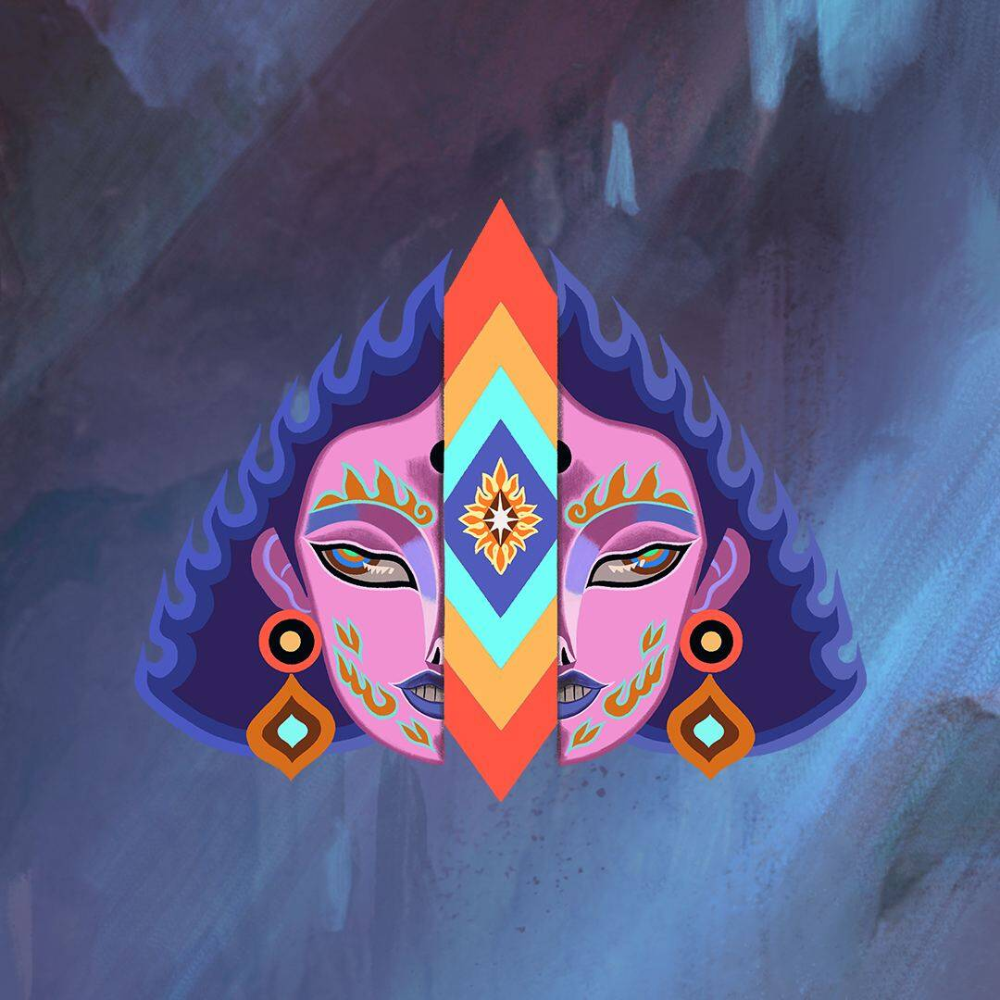 Sikuverse Totem 呈现：Siku 是一个选集系列和 XR 游戏，与您一起发展创造潜力。 每个 Siku 都是独一无二的，需要进入和探索 Sikuverse。 Siku是艺术和媒体的
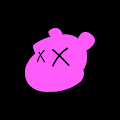 Silly Old Bear Silly Old Bear NFT 系列是“区块链自由”的声明，也是对世界上应该正确的事物的艺术荣誉徽章。 一群艺术家聚集在一起，创造了 100 多种对他们的生活具有深远意义的特
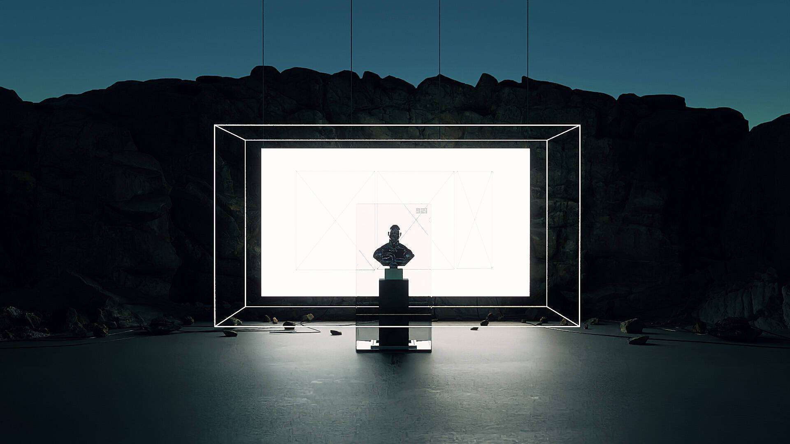 Silver Chrome - Booba 银铬版 直到 7 月 8 日上午 11:59 如果您是 Booba “TN” 或 “GDC” NFT 的持有者，您现在可以通过使用您的钱包登录此站点来检索新的 NFT。 另一个独家等着你。 请
SimpCards 辛普卡统计 创建于 7 个月前 888代币供应 10% 费用 过去 7 天内未售出任何 SimpCard。 关于 NFT 文化和加密 Twitter 的社会评论。888 个生成的 SIMP 卡永久存在于
Simpletons NFT 什么是单人？ Simpletons 是一个精选系列,其中包含1000 幅独特的 1-of-1绘画, 灵感来自涩谷人民。 由 Yuka-san 设计的 Simpleton 的艺术品是在日本中心的世界上最繁 忙的十
Simply Possessed 简单拥有统计 创建于 2 个月前 1,032 代币供应 5% 费用 在过去 7 天内，Simply Possessed NFT 被卖出 3 次。《Simply Possessed》的总销售额为 19.65 美元。一
SimpQueenDAO SimpQueenDAO 统计数据 创建于 7 个月前 2,069 代币供应 5% 费用 过去 7 天没有出售 SimpQueenDAO。 经过 0xwenmoon SimpQueenDAO 是一个拥有 5000 名会员的项目，作为以太坊区块链上的 NF
Sins Finance Nodes Sins Finance Nodes 统计 创建于 7 个月前 1,664 代币供应 0% 费用 2,114 名 Discord 成员 过去 7 天内没有出售 [已停产 - 已迁移到 AVAX，请勿交易] Sins Finance 节点。 Sin Nodes 是用该领域最好的投资
Sipher Spaceship Lootbox 什么是 SIPHER？ SIPHER 是一款雄心勃勃的休闲格斗和探索游戏，其最终目标是创建一个开放世界的社交体验，所有这些都建立在以太坊区块链上。玩家驱动的
Skanky Skunk Clube 关于我们 臭鼬臭鼬俱乐部 Skanky Skunk Club 是 10k 个独特的 NFT 臭鼬的集合，随时可以被采用。他们受到每天在家办公或隔离中的每个人的启发。有些人的灵感来自我们见过的
Skate Punks Club #SKPC 经过 SKPC部署器 Skatepunks 是一个出于对 SK8 和街头艺术文化的热爱而创建的系列，由手绘部件组成，如夹克帽衫、滑板、各种金属服装、很棒的背包、锡面、酷运动
Ske Boyz NFT 经过 阿尔法激情 Ske Boyz 为社区而来。路线图正在制定中，并将根据社区的需求制定。铸币者将从即将推出的动画项目中获得免费铸币。抓住你的帽子！ Alpha Pass -离子
Skel-F-tees SkelFtees 是一个化身和游戏内资产 NFT 集合，在我们即将推出的社交休息室/PvE 游戏中使用我们的 NFT 作为角色。 这是#Spooky 季节宝贝，距离我们推出#Sk
SkellyTony SkellyTony NFT - 常见问题（FAQ） ▶ 什么是 SkellyTony？ SkellyTony 是一个 NFT（不可替代令牌）集合。存储在区块链上的数字艺术品集合。 ▶ 存在多少 SkellyTony 代币？
Sketchy Octo 粗略的 Octo 统计数据 创建于 11 个月前 322代币供应 10% 费用 过去 7 天没有售出 Sketchy Octo。 粗略的 Octos，但它们是从哪里来的？ Sketchy Octo NFT - 常见问题（FAQ
Skits (for Jay Pegs Auto Mart) 第1阶段：保留您的钥匙 通过在 MISO（Sushi 的代币销售平台）上购买 $DONA 预留代币来预留您的钥匙。味噌特卖将于 9 月 13 日美国东部标准时间 12 点开始
Skoolyard Boys Official 随着 NFT NYC 的临近，我们的团队将举办 IRL 活动来加强我们的社区！我们将为少数持有者在 NFT NYC 提供全方位的体验！在我们的 Twitter 上保持更新，了解更多即将举行的 IRL
Skull Kitties 骷髅猫统计 创建于大约 1 年前 536 代币供应 2.5% 费用 过去 7 天内没有出售任何骷髅小猫。 Skull Kitties 是 9999 只从地狱中长大的可爱小猫的集合。它们是独一无二的，随机生成
skull mfers 头骨mfers统计 创建于 6 个月前 817代币供应 5% 费用 过去 7 天内没有出售任何颅骨模型。 现在是骷髅的mfer ▶ 什么是颅骨移植？ 骷髅 mfers 是一个 NFT
Skull Study The Crown Series 头骨研究皇冠系列统计 创建于 6 个月前 6 代币供应 10% 费用 过去 7 天内没有售出 Skull Study The Crown 系列。 用霓虹色和激光束破坏完美的皇室头骨 Skull Study The Crown 系列 NFT - 常见问题
skullbirdz.wtf Collection Official 铸币价格是多少？ 铸币价格将是免费铸币！ 2我可以铸造多少个骷髅鸟z.wtf？ 每个钱包无限铸币 3我在哪里可以查看我的 NFT？ 一旦你铸造了一个头骨
SkullFellas: Family First SkullFellas – 一个连接良好的 NFT 集合。我们是 5,555 个独特的 3D 雕刻、逼真纹理和随机生成的 SkullFellas——一个 1900 年代早期的犯罪家族，从我们的骨灰中复活
skullies.club 免费薄荷 10,000 个时髦的头骨生活在以太坊区块链上。 由一群野心勃勃的 web 2.0 开发人员开发，Skullies Club 是他们在 web 3.0 世界中的第一个项目！ 你可以发现他
SkullMoods 骷髅情绪统计 创建于 3 个月前 863代币供应 7.5% 费用 过去 7 天内没有出售任何 SkullMoods。 在穆德兰免费获得 7,000 枚粉彩头骨 SkullMoods NFT - 常见问题（FAQ